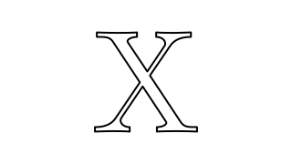

| Copyright | Written by David Himmelstrup |
|---|---|
| License | Unlicense |
| Maintainer | lemmih@gmail.com |
| Stability | experimental |
| Portability | POSIX |
| Safe Haskell | None |
| Language | Haskell2010 |
Reanimate.Morph.Rotational
Description
Synopsis
- type Origin = (Double, Double)
- rotationalTrajectory :: Origin -> Trajectory
- polygonOrigin :: Polygon -> Origin -> V2 Double
Documentation
type Origin = (Double, Double) Source #
Rotational origin relative to polygon center. (0.5, 0.5) is center of polygon. Top right is (1,1) and bottom left is (0,0)
rotationalTrajectory :: Origin -> Trajectory Source #
Interpolation by rotating around an origin point.
Example:
playThenReverseA$pauseAround0.5 0.5 $mkAnimation3 $ \t ->withStrokeLineJoinJoinRound$ let src =scale8 $center$latex"X" dst =scale8 $center$latex"H" inmorphlinear{morphTrajectory=rotationalTrajectory(0.5,0.5)} src dst t
